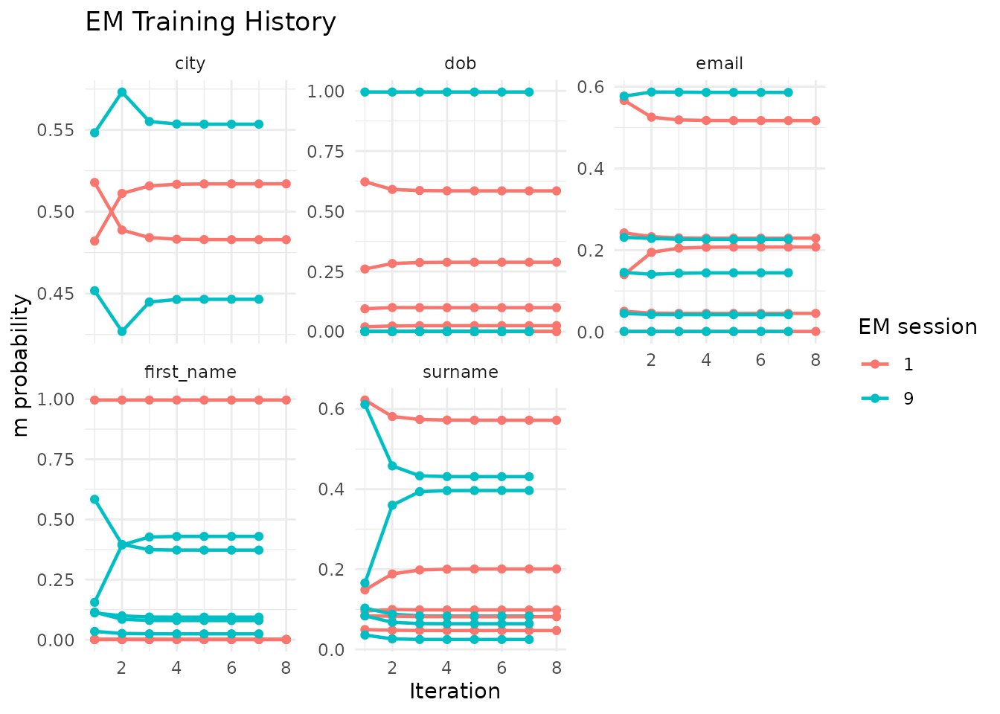
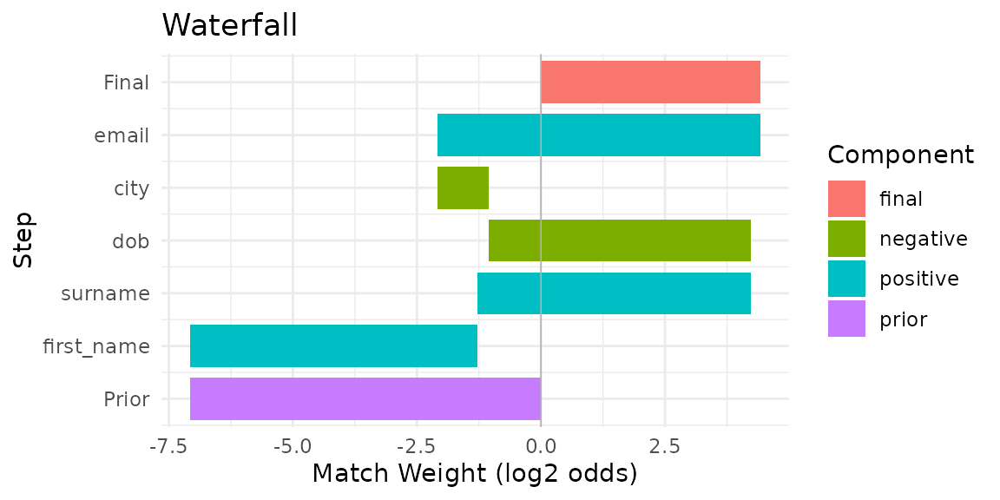

Advanced Workflows
advanced.RmdThis vignette covers advanced irelink features for users
who have completed the Getting Started or Deduplication vignettes. All
examples use fake_1000 and a shared in-memory DuckDB
connection.
Setup
Train a complete model on fake_1000 that will be reused
across sections.
library(irelink)
#>
#> Attaching package: 'irelink'
#> The following object is masked from 'package:base':
#>
#> months
library(ggplot2)
df <- fake_1000
con <- DBI::dbConnect(duckdb::duckdb())
spec <- il_spec() |>
il_compare(first_name, cl_name()) |>
il_compare(surname, cl_name()) |>
il_compare(dob, cl_dob()) |>
il_compare(city, cl_exact(term_frequency = TRUE)) |>
il_compare(email, cl_email()) |>
il_block_on(first_name) |>
il_block_on(surname) |>
il_block_on(city)
model <- il_model(df, spec = spec, con = con)
model <- il_estimate_prior(
model,
block_on(first_name, surname),
block_on(email),
recall = 0.6
)
model <- il_estimate_u(model, max_pairs = 1e5)
model <- il_estimate_em(model, block_on(first_name))
model <- il_estimate_em(model, block_on(dob))
pairs <- predict(model, threshold = 0.5)
clusters <- il_cluster(pairs, threshold = 0.85)Training diagnostics
il_training_history() returns the m and u parameter
estimates at each EM iteration across all training sessions. Plot it to
check whether parameters have converged:
hist <- il_training_history(model)
autoplot(hist)
A well-converged model shows stable values in the final iterations. If estimates are still drifting, add more EM passes with different blocking rules or expand the set of candidate pairs.
Pair inspection
il_compare_records() scores a single pair of records
against the spec without requiring a full prediction pass. Use it to
diagnose why a known match scores too low or a non-match scores too
high.
rec_a <- fake_1000[1, ]
rec_b <- fake_1000[5, ]
il_compare_records(rec_a, rec_b, spec = model$spec, con = con)
#> # A tibble: 1 × 5
#> gamma_first_name gamma_surname gamma_dob gamma_city gamma_email
#> <int> <int> <int> <int> <int>
#> 1 0 0 1 0 0The gamma columns show the comparison level reached on each field.
Cross-reference these with il_weights(model) to read off
the match-weight contribution of each level.
For a visual breakdown of how per-field gamma values sum to an overall match decision, draw a waterfall chart for any pair in the scored set:
autoplot(pairs, which = 1)
Lazy prediction for large data
predict(collect = FALSE) keeps scored pairs in the
database rather than collecting them into R. il_cluster()
detects the lazy reference and runs connected-components analysis
entirely in SQL, avoiding a costly round-trip for datasets where
materialising millions of rows would exhaust memory.
pairs_lazy <- predict(model, threshold = 0.5, collect = FALSE)
pairs_lazy
#> <il_compared_lazy> 1,908 pairs in table __il_predicted (threshold = 0.5)Pass the lazy reference directly to il_cluster():
clusters_lazy <- il_cluster(pairs_lazy, threshold = 0.85)
nrow(clusters_lazy)
#> [1] 893autoplot() and il_waterfall() collect
automatically when needed, so downstream analysis code is unchanged. Use
the lazy path any time candidate-pair counts exceed available
memory.
Cluster diagnostics
il_graph_metrics() computes node-, edge-, and
cluster-level summaries from the linkage graph. Use it to spot
over-generous thresholds (clusters that are too large) or sparse
connectivity (clusters with unexpectedly low density).
metrics <- il_graph_metrics(pairs, clusters)The cluster table reports size and internal edge density (edges / maximum possible edges for a cluster of that size):
metrics$clusters
#> # A tibble: 199 × 4
#> cluster_id n_nodes n_edges density
#> <chr> <int> <int> <dbl>
#> 1 cluster_133 9 22 0.611
#> 2 cluster_179 6 11 0.733
#> 3 cluster_389 5 7 0.7
#> 4 cluster_44 5 10 1
#> 5 cluster_453 9 18 0.5
#> 6 cluster_476 2 1 1
#> 7 cluster_582 2 1 1
#> 8 cluster_674 8 18 0.643
#> 9 cluster_778 5 10 1
#> 10 cluster_825 9 19 0.528
#> # ℹ 189 more rowsA high maximum cluster size combined with low density often indicates
that a transitive link is pulling unrelated entities together. Consider
raising the threshold in predict() or
il_cluster() and re-checking the metrics.
The node table shows how many links each record participates in (degree):
head(metrics$nodes)
#> # A tibble: 6 × 3
#> unique_id cluster_id degree
#> <chr> <chr> <int>
#> 1 136 cluster_133 1
#> 2 140 cluster_133 5
#> 3 139 cluster_133 6
#> 4 138 cluster_133 6
#> 5 137 cluster_133 6
#> 6 133 cluster_133 7Records with unusually high degree relative to their cluster size may be acting as hubs that inflate the cluster beyond its true membership.
Phonetic blocking
Standard equality blocking misses pairs where names are spelled
differently but sound alike — for example, “Smith” / “Smyth” or “Jon” /
“John”. Pass .transform = il_soundex to
il_block_on() or block_on() to group names by
phonetic code instead of exact spelling.
spec_phon <- il_spec() |>
il_compare(first_name, cl_name()) |>
il_compare(surname, cl_name()) |>
il_compare(dob, cl_dob()) |>
il_block_on(first_name, .transform = il_soundex) |>
il_block_on(surname, .transform = il_soundex)Use the same .transform argument when specifying the
blocking rule for an EM training pass:
model_phon <- il_model(df, spec = spec_phon, con = con)
model_phon <- il_estimate_u(model_phon, max_pairs = 1e5)
model_phon <- il_estimate_em(
model_phon,
block_on(first_name, .transform = il_soundex)
)Phonetic blocking increases recall at the cost of more candidate
pairs. Use il_count_pairs() to check the volume trade-off
before committing to a spec.
Column transforms
The transform argument in il_compare()
applies a function to both values before scoring. Use it to normalise
case or strip whitespace before a similarity comparison:
spec_tr <- il_spec() |>
il_compare(first_name, cl_jaro_winkler(0.9, 0.7), transform = tolower) |>
il_compare(surname, cl_jaro_winkler(0.9, 0.7), transform = tolower) |>
il_compare(dob, cl_exact()) |>
il_block_on(first_name) |>
il_block_on(surname)
model_tr <- il_model(df, spec = spec_tr, con = con)
model_tr <- il_estimate_u(model_tr, max_pairs = 1e5)
model_tr <- il_estimate_em(model_tr, block_on(surname))tolower, toupper, and trimws
are translated to SQL on DuckDB and PostgreSQL, so the transform runs
in-database at full speed. Custom R functions work on the R-side path
only. When saving a model with il_save(), transforms are
stored by name and restored on il_load(); anonymous
functions produce a warning on save.
Incremental matching
il_find_matches() scores new records against the data
already loaded into a trained model without retraining. It applies the
same blocking rules and comparison spec:
new_df <- data.frame(
first_name = c('Jhon', 'Alice'),
surname = c('Smith', 'Jones'),
dob = c('1990-01-15', '1985-06-20'),
city = c('London', 'Manchester'),
email = c(NA, 'ajones@example.com')
)
matches <- il_find_matches(model, new_df, threshold = 0.5)
matches
#> # A tibble: 0 × 4
#> # ℹ 4 variables: unique_id_l <chr>, unique_id_r <chr>, match_weight <dbl>,
#> # match_probability <dbl>Each row is a (new record, existing record) pair.
unique_id_l identifies the new record (auto-assigned
starting from 1) and unique_id_r identifies the matched
record in the original dataset.
This pairs naturally with il_load() and
il_attach(): load a saved model, attach it to the current
database, and call il_find_matches() for each incoming
batch of new records.
Cleanup
il_cleanup(model)
il_cleanup(model_phon)
il_cleanup(model_tr)
DBI::dbDisconnect(con, shutdown = TRUE)